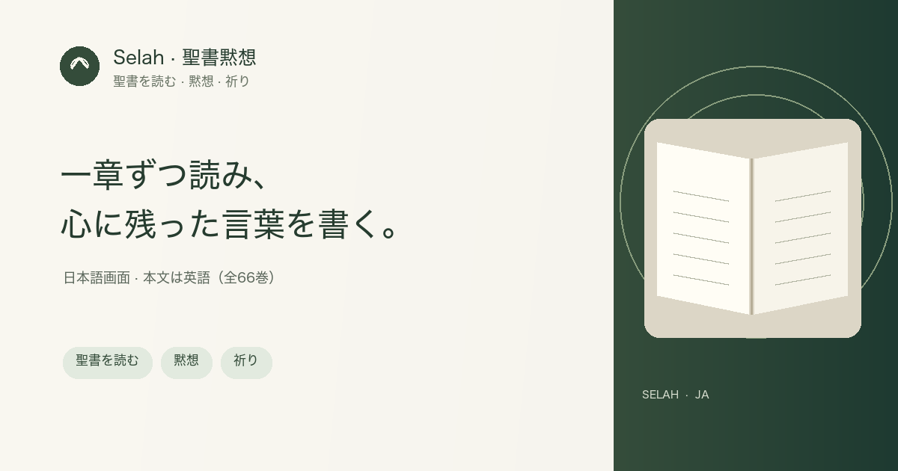

日本語画面 · 聖書黙想アプリ
聖書を読み、心に残ったことを静かに書き留める。

Selah（セラ）は、聖書を一章ずつ読み、祈りや黙想を書き留める無料のウェブアプリです。日本語の操作画面を選べます。標準本文は英語のWorld English Bible全66巻です。翻訳ライブラリには新約の日本語訳もあり、必要に応じてこの端末に追加できます。
Selahでできること
- World English Bible全66巻を読み、日本語の操作画面を選ぶ。日本語訳は新約の追加版を選べる
- 聖書本文の隣に、要点と今日の応答を記録する
- ノートを保存して、後から編集する
- ChatGPTの音声読み上げ用に、本文と依頼文を準備する
- 聖書本文や外部の朗読リンクを選んで開く
日本語に加え、韓国語・英語・中国語（簡体字・繁体字）の画面表示を選べます。ChatGPT音声と外部の朗読・動画サービスは、リンク先で利用者が選んで開始します。